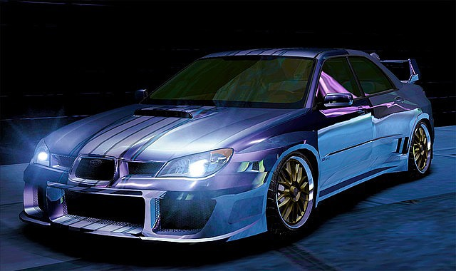

The Best Racecars for Racing
Street racing is typically an unsanctioned and illegal form of auto racing that occurs on a public road. Street Racing often involves dangerous dodging of cars and speeding past traffic lights. It is often very fast and adrenaline-inducing, and so can often result in accidents, harming both the driver & passengers and other people. Street racing is illegal, sure, but so is jaywalking and littering, you don't see people stop doing that.
Toyota Supra
Japanese cars are pretty much the ones that tuners love to play around with, and the Toyota Supra is one of them. Although Toyota is not associated with neck-breaking speed, the Supra can be tuned to be a street racer for any serious racer.

Honda Civic
Honda Civic s not the greatest performance car, but it is one of the most popular cars ever made by Honda. It is lightweight, reliable, and it has many tuning opportunities.

Mistsubishi Lancer Evolution
This car has several variants, the Lancer Evo 6, 6.5, 7, 8, and Evo 9. However, all of these have the same engines, although there is a little bit of difference in the turbine housing and camshaft. This car can have a lot of tunable parts. You can work on the following if you’re looking to tune the iconic Mitsubishi Lancer Evolution. When you’re done working on the upgrades, you should have at least 60 to 70 extra horses.

Ford Mustang
The Ford Mustang boasts serious power and performance, but you can still tune it to add a few more horsepower. Tuning the mustang will give you a better and improved throttle response, more horsepower and torque, and believe it or not, your car will even have a better fuel economy.
Subaru Impreza
In a world of fast cars, Subaru is one of the cars that demands respect and attention. Subaru Impreza is a great car that has a lot of tunable parts, and it can be tuned for a reasonable amount of money. This car does not necessarily have to be tuned, but if you want to have better handling, and have more power, you can tune it.
